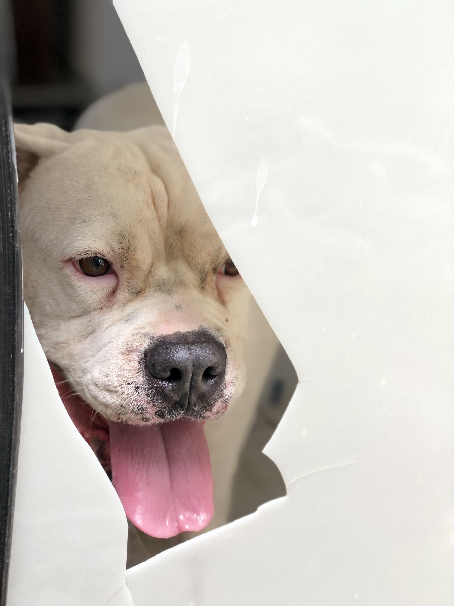

Liz Gonzalez
Cabo San Lucas, Mx
Estudiante de programación y inglés, trabajo en un restaurante de mesera.
Tengo 19 años me gusta salir a pasear a mi perro, mi comida favorita son las popusas y las arepas.
Temas de interes:
-Minimalismo.
-Programación.
-Gym.
-Familia.